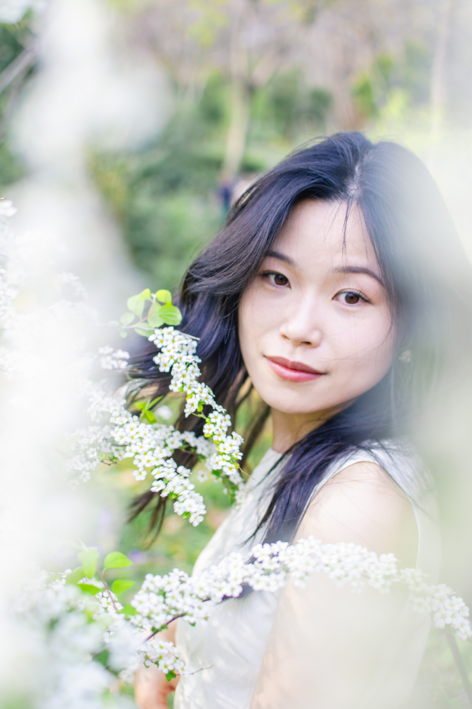

一些关于南京的雨，和你。
三月的南京，真的下了太多太多的雨
此刻坐在前工院的玻璃窗前，暖色的灯光打在桌上，窗外是淅淅沥沥的雨和行色匆匆的路人，学习之余不免开始思绪流淌
在没有认识你之前，经常会觉得，大概自己会孤独的度过此生，不会有人读懂真正的我。但是好在幸运，在这阴雨连绵中等到了晴天，在春光乍破、花开最美之时，遇见了你

很多时候会觉得，你像只小猫，可爱到想要将你抱在怀中，摸摸你的头顺顺你的毛
无数次看向你，目光越过明媚的双眸，扫过鼻尖，落在双唇，感觉软软的，香香的
每次牵着你的手，想要紧紧握住，不松开；当你靠在怀里，软乎乎的，很安心，很舒服
我在心里默默对自己说，这就是我想要牵着手走过一生的人。我希望能一直握着你的手，有很长很长的以后
......
窗外的雨下大了，但也无妨，因为你我的世界彻底放晴
--2026.3.30 俊玮 于前工院